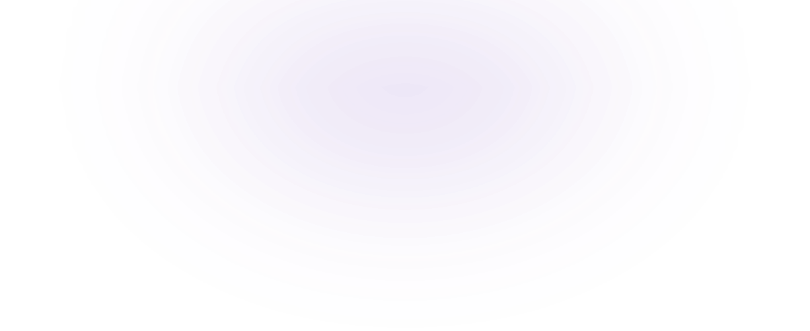
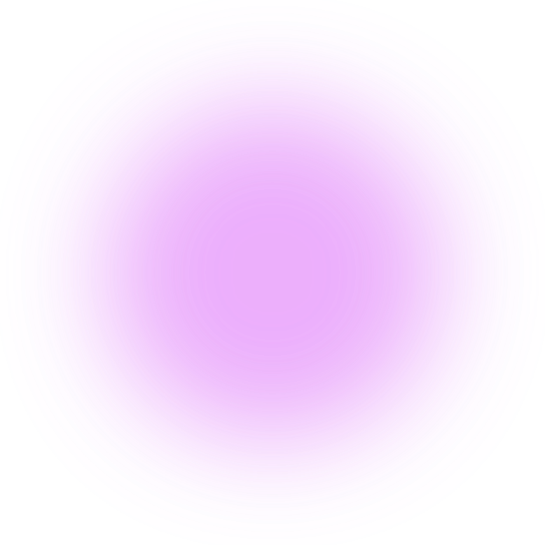

Our Analysis Methodology
A multi-stage AI pipeline that captures, processes, and analyzes candidate behavior in real-time to deliver objective nervousness assessment.
Data Collection
Real-time capture of video, audio, and behavioral signals during the interview
Feature Extraction
AI models extract 468+ facial landmarks, vocal patterns, and body posture metrics
Signal Processing
Multi-modal signals fused and normalized across temporal windows for accuracy
Analysis & Scoring
Comprehensive nervousness profile generated with confidence-weighted scores


The Three Pillars of Analysis
Each pillar operates independently while contributing to a unified nervousness assessment through our multimodal fusion engine.
Multi-modal Data
Fusion
Our system intelligently combines facial, vocal, and behavioral data streams into a unified analysis framework.
-
 Weighted signal integration
Weighted signal integration
-
Cross-modal correlation analysis
-
Temporal alignment of data streams
-
Confidence-weighted scoring
-
Noise filtering & signal validation
-
Adaptive sensitivity calibration


Real-Time Processing Pipeline
Every frame and audio segment is analyzed live during the interview, delivering instant behavioral insights.
-
Frame-by-frame video analysis
-
Continuous speech monitoring
-
Sliding window behavioral tracking
-
Adaptive threshold calibration
-
Low-latency metric computation
-
Per-question metric segmentation
Scoring & Report Generation
Generates structured reports with composite scores, per-question breakdowns, and actionable insights.
-
Composite nervousness scoring
-
Per-question performance breakdown
-
Confidence & eye contact metrics
-
Behavioral incident timeline
-
Comparative candidate benchmarking
-
Exportable PDF report generation
Facial Expression Engine
Our computer vision models leverage MediaPipe's 468 facial landmarks to track micro-expressions, eye movement, and head pose in real-time at 30fps.
-
Blink rate & eye contact duration tracking
-
Proportional emotion classification (confident, stressed, focused,
neutral)
-
Head pose yaw/pitch analysis for engagement detection


Vocal & Speech Engine
The Web Speech API powers real-time transcription while custom algorithms analyze speaking pace, filler word frequency, and vocal patterns.
-
Words-per-minute tracking with sliding window smoothing
-
Filler word detection (um, uh, like, you know, etc.)
-
Delta-based per-question metric segregation


Body Language & Posture Analysis
MediaPipe Pose tracks 33 body landmarks to detect fidgeting, self-touch gestures, and posture shifts. These behavioral signals are counted per-question and contribute to the composite nervousness score.
-
Fidget detection via hand-to-face distance thresholds
-
Posture shift tracking through shoulder landmark
variance
-
Self-touch counting with cooldown-based deduplication
-
Per-question behavioral incident aggregation







Ready to Transform Your Hiring?
Experience AI-powered interview analysis that gives your team objective, data-driven insights into every candidate.
Start Evaluating Now